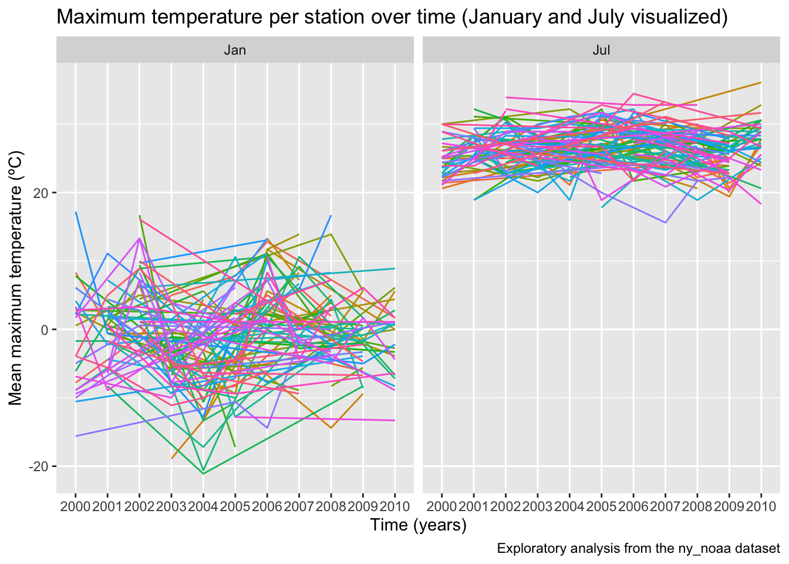

This dashboard analyses data from the NOAA package as part of a Data Science p8105 class exercise.
The National Oceanic and Atmospheric Association (NOAA) of the National Centers for Environmental Information (NCEI) provides public access to some weather data, including the GHCN (Global Historical Climatology Network)-Daily database of summary statistics from weather stations around the world. More information on the adapted NOAA dataset for p8105 is available here.
We’re going to load required libraries for this project.
library(tidyverse)## ── Attaching packages ─────────────────────────────────────── tidyverse 1.3.2 ──
## ✔ ggplot2 3.3.6 ✔ purrr 0.3.5
## ✔ tibble 3.1.8 ✔ dplyr 1.0.10
## ✔ tidyr 1.2.1 ✔ stringr 1.4.1
## ✔ readr 2.1.3 ✔ forcats 0.5.2
## ── Conflicts ────────────────────────────────────────── tidyverse_conflicts() ──
## ✖ dplyr::filter() masks stats::filter()
## ✖ dplyr::lag() masks stats::lag()library(p8105.datasets)
library(plotly)##
## Attaching package: 'plotly'
##
## The following object is masked from 'package:ggplot2':
##
## last_plot
##
## The following object is masked from 'package:stats':
##
## filter
##
## The following object is masked from 'package:graphics':
##
## layoutNext, we’ll concentrate on a subset of the NOAA data. The code below extracts the “ny_noaa” dataset and does some data cleaning and wrangling to generate the “noaa_df” including:
janitor::clean_names
function.separate.mutate in combination with
as.numericand similar arguments.mutate function, 3
new columns (prcp2, tmin2, tmax2) are generated.In order to reduce the scope of the dataset (and therefore allow for
better functioning of an online dashboard), using filter
we’ll select the data from the years between 2000 and 2010, and drop all
the empty precipitation, snow and temperature records. Finally, using
sample_n() we’ll select a random sample of 5,000
observations.
noaa_df = ny_noaa %>%
janitor::clean_names() %>%
separate(date, into = c("year", "month", "day"), sep = '-') %>%
mutate(month = as.numeric(month),
year = as.factor(year),
month = month.abb[month],
month = factor(month, levels = month.abb),
tmax = as.numeric(tmax),
tmin = as.numeric(tmin),
prcp = as.numeric(prcp),
prcp2 = prcp/10,
tmax2 = tmax/10,
tmin2 = tmin/10) %>%
filter(
year %in% 2000:2010,
!is.na(tmax),
!is.na(tmin),
!is.na(prcp),
!is.na(snow)) %>%
sample_n(5000)
str(noaa_df)## tibble [5,000 × 12] (S3: tbl_df/tbl/data.frame)
## $ id : chr [1:5000] "USC00300961" "USC00300889" "USC00308906" "USC00305512" ...
## $ year : Factor w/ 30 levels "1981","1982",..: 24 20 29 26 25 26 27 20 23 28 ...
## $ month: Factor w/ 12 levels "Jan","Feb","Mar",..: 3 6 5 3 7 4 3 11 2 10 ...
## $ day : chr [1:5000] "12" "07" "26" "29" ...
## $ prcp : num [1:5000] 0 160 0 0 0 15 0 0 8 0 ...
## $ snow : int [1:5000] 0 0 0 0 0 0 0 0 48 0 ...
## $ snwd : int [1:5000] 0 0 0 0 0 0 0 0 254 0 ...
## $ tmax : num [1:5000] 100 211 244 106 322 122 150 67 -89 250 ...
## $ tmin : num [1:5000] 17 78 67 -17 106 -33 -33 11 -172 56 ...
## $ prcp2: num [1:5000] 0 16 0 0 0 1.5 0 0 0.8 0 ...
## $ tmax2: num [1:5000] 10 21.1 24.4 10.6 32.2 12.2 15 6.7 -8.9 25 ...
## $ tmin2: num [1:5000] 1.7 7.8 6.7 -1.7 10.6 -3.3 -3.3 1.1 -17.2 5.6 ...skimr::skim(noaa_df)| Name | noaa_df |
| Number of rows | 5000 |
| Number of columns | 12 |
| _______________________ | |
| Column type frequency: | |
| character | 2 |
| factor | 2 |
| numeric | 8 |
| ________________________ | |
| Group variables | None |
Variable type: character
| skim_variable | n_missing | complete_rate | min | max | empty | n_unique | whitespace |
|---|---|---|---|---|---|---|---|
| id | 0 | 1 | 11 | 11 | 0 | 152 | 0 |
| day | 0 | 1 | 2 | 2 | 0 | 31 | 0 |
Variable type: factor
| skim_variable | n_missing | complete_rate | ordered | n_unique | top_counts |
|---|---|---|---|---|---|
| year | 0 | 1 | FALSE | 11 | 200: 490, 200: 482, 200: 482, 200: 479 |
| month | 0 | 1 | FALSE | 12 | May: 468, Nov: 451, Aug: 436, Mar: 433 |
Variable type: numeric
| skim_variable | n_missing | complete_rate | mean | sd | p0 | p25 | p50 | p75 | p100 | hist |
|---|---|---|---|---|---|---|---|---|---|---|
| prcp | 0 | 1.00 | 31.30 | 78.89 | 0.0 | 0.0 | 0.0 | 23.0 | 1575.0 | ▇▁▁▁▁ |
| snow | 0 | 1.00 | 5.29 | 27.66 | 0.0 | 0.0 | 0.0 | 0.0 | 762.0 | ▇▁▁▁▁ |
| snwd | 206 | 0.96 | 37.08 | 110.27 | 0.0 | 0.0 | 0.0 | 0.0 | 1219.0 | ▇▁▁▁▁ |
| tmax | 0 | 1.00 | 141.80 | 110.53 | -211.0 | 50.0 | 156.0 | 239.0 | 400.0 | ▁▅▆▇▂ |
| tmin | 0 | 1.00 | 32.43 | 103.49 | -356.0 | -33.0 | 39.0 | 117.0 | 311.0 | ▁▂▇▇▂ |
| prcp2 | 0 | 1.00 | 3.13 | 7.89 | 0.0 | 0.0 | 0.0 | 2.3 | 157.5 | ▇▁▁▁▁ |
| tmax2 | 0 | 1.00 | 14.18 | 11.05 | -21.1 | 5.0 | 15.6 | 23.9 | 40.0 | ▁▅▆▇▂ |
| tmin2 | 0 | 1.00 | 3.24 | 10.35 | -35.6 | -3.3 | 3.9 | 11.7 | 31.1 | ▁▂▇▇▂ |
The following interactive data visualizations (aka dashboard) are
creating using plot_ly.
### Line plot
Using I make a two-panel plot showing the average max temperature in January and in July in each station across years.
max_temp = noaa_df %>%
filter(month == "Jan" | month == "Jul") %>%
group_by(id, year, month) %>%
summarize(mean_temp = mean(tmax2, na.rm = TRUE)) %>%
ggplot(aes(x = year, y = mean_temp, group = id)) +
geom_line(aes(color = id)) +
facet_grid(. ~ month) +
labs(
title = "Maximum temperature per station over time (January and July visualized)",
x = "Time (years)",
y = "Mean maximum temperature (ºC)",
caption = "Exploratory analysis from the ny_noaa dataset") +
theme(legend.position = "none")## `summarise()` has grouped output by 'id', 'year'. You can override using the
## `.groups` argument.max_temp